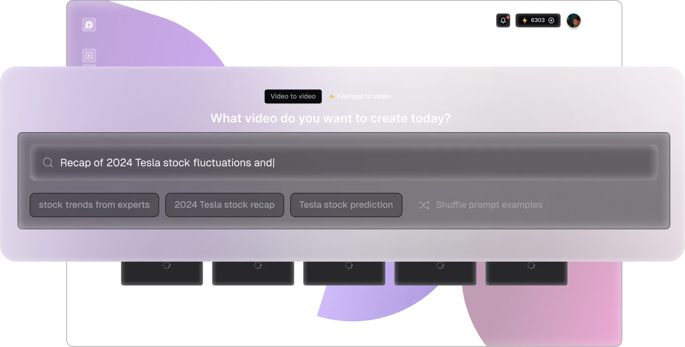
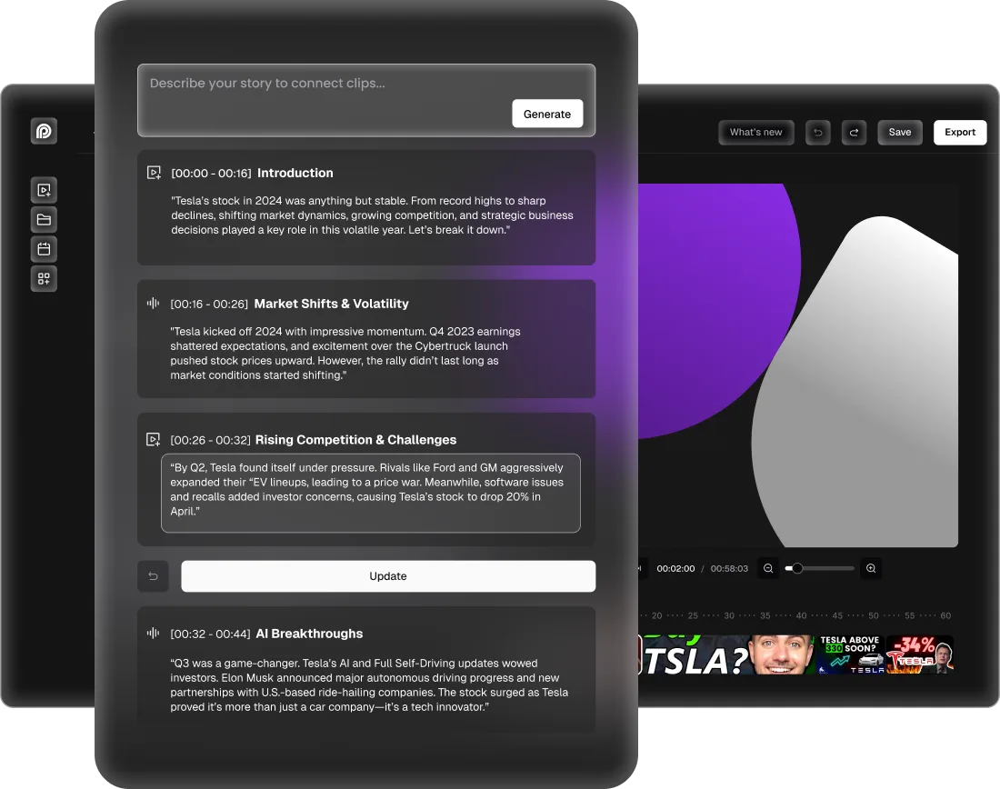

Opus Clip planned to launch its new function, introducing key feature to enable users to create a video that perfectly aligns with their needs using only a prompt. By supporting this new use case, Opus Clip will provide a more powerful and flexible tool for video creation, catering to both creative and professional needs.
With the new function users simply provide a prompt, and the AI handles the heavy lifting. It identifies relevant content primarily from their video library—or online resources if needed—and generates a video. Users only need to make minor adjustments, reducing the time required to just a few minutes to 20 minutes.
As a designer, I fully participated in the project from 0 to 1, driving an end-to-end design through learning from product managers to understand the requirement, conducting user research and competitive analysis to gain insights, and building wireframes and prototypes.
Dec,2024 - March 2025
Opus Clip, an AI-driven platform known for helping users transform long videos into short, engaging clips, has garnered a strong user base of 6 million. Unlike traditional video editing tools, OpusClip offers a seamless, user-friendly experience. Within AI power, it drastically reduces editing costs compared to manual video editing and produces multiple short clips for users to select and refine.
By aligning with business and engineering goals, the design team pivoted to real user needs through a two-month design process. Instead of generating entirely new videos, I designed a footage-to-video feature from 0 to 1, enabling OpusClip users to seamlessly transform their existing footage into compelling AI-driven voiceover video.

Learned from the PRD and internal user portal, Users are looking for a feature that allows them to create videos simply by providing a prompt or script. AI would then assist by gathering relevant materials and producing a video.
From competitive analysis, I have gained the insights that current competitors are using different strategies to minimize the learning curve of using AI power. At the same time, the AI generated materials are not 100% satisfied. From UX perspective, the simplification of user flow and dashboard UI is the key point to retain users.


Within 10+ user reviews and 500+ user surveys from active users, I have gained further insights: Users are willing to embrace AI power in video editing process especially using prompts, however, the AI output are not always ideal. Moreover, users prefer to use AI to generate a draft instead of the fine-tuned video. In this stage, I initiated user research with active users in our platform to test our concept and learn user habits and pain points.
Here is their feedbacks:


After learning from the research, I gained insights and opportunities on how we can build the final product. So I break down the problems into two phase in the user journey and tried to figure out the opportunity we can equip AI function with the current product:


In order to ensure the final product meets user expectations, I then bring design options from concepts and conduct an AB testing with 10+ users.
The key findings are listed below:
· 'Start from videos' at search homepage: User can play to preview, Offer autosaved projects or AI suggested clips
· 'Add to cart' needs to be consistent: Keep overall layout consistent to minimize learning curve
· AI generating storyboard: Maintain the key features "Clips cart", "Add", "Go back"
· Automated voiceover edit: an efficient and easy way to edit voiceover within prompt inputs


When the user needs to search for some specific topics, they can enter prompts in the search section, then the relevant clips will be displayed for the user to select


When AI selects the content for the user, user can still do filtering and create storyboard based on her/his own preference
After compiling the clips, user can input prompts to generate the draft within AI power


Offering user the control in the whole AI process is crucial to gain user retention and satisfaction
The beta version design has been tested among 200 internal testing users. Based on qualitative and quantitative research, the product team has validated it as PMF (Product Market Fit)